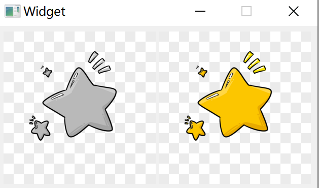

1.简介
Qt提供四个类来处理图像数据：QImage、QPixmap、QBitmap和QPicture。
（1）QImage：针对I/O和直接像素访问和操作进行设计和优化的类。
（2）QPixmap：针对屏幕上显示的图像进行设计和优化的类。
（3）QBitmap：一个继承自QPixmap的便捷类，确保深度为1。
（4）QPicture：该类是一个绘画设备，可以记录和回放QPainter命令。
2.QImage类
2.1 QImage简介
QImage类提供了一个独立于硬件的图像表示，允许开发者直接访问像素数据，并且该类可以用作绘图设备。
因为QImage是QPaintDevice的子类，所以可以使用QPainter直接在QImage上绘图。在QImage上使用QPainter时，可在当前GUI线程之外的线程中执行绘制操作。
QImage类支持由Format enum描述的几种图像格式。包括：单色、8位、32位和字母混合的图像。
QImage提供了一组函数，可用于获取图像的各种信息。还有几个函数可以实现图像的转换。
QImage对象可以通过值传递，因为QImage类使用隐式数据共享。QImage对象也可以流化和比较。
注意：不支持在
QImage::Format_Indexed8格式的QImage上绘图。
2.2 使用QImage读取图像文件
QImage提供了三种加载图像文件的方法：
方法一：可以在构造QImage对象时加载图像文件。
方法二：使用
load()或loadFromData()函数加载图像文件。方法三：QImage提供了静态
fromData()函数，从给定的数据构造QImage对象。注：加载图像文件时，图像文件的名称可以是磁盘上的实际文件路径，也可以引用应用程序的资源文件。
2.3 使用QImage进行图像写入
使用
save()函数来保存QImage对象。QImage支持的文件格式可以通过
QImageReader::supportedImageFormats()和QImageWriter::supportedImageFormats()函数获得。新的文件格式可以作为插件添加。默认情况下Qt支持以下图片格式：
| 序号 | 格式 | 描述 | Qt支持的操作 |
|---|---|---|---|
| 1 | BMP | Windows位图 | 读/写 |
| 2 | GIF | Graphic Interchange Format | 读 |
| 3 | JPG | Joint Photographic Experts Group | 读/写 |
| 4 | JPEG | Joint Photographic Experts Group | 读/写 |
| 5 | PNG | 可移动的网络图片 | 读 |
| 6 | PBM | 可移动的位图 | 读 |
| 7 | PGM | Portable Graymap | 读 |
| 8 | PPM | Portable Pixmap | 读/写 |
| 9 | XBM | X11 位图 | 读/写 |
| 10 | XPM | X11Pixmap | 读/写 |
2.4 获取图像信息
2.4.1 获取Geometry信息
size()、width()、height()、dotsPerMeterX()和dotsPerMeterY()函数提供关于图像大小和宽高比的信息rect()函数返回图像的外围矩形。valid()函数检测一个给定的坐标对是否在这个矩形内。offset()函数返回图像相对于其他图像定位时的偏移像素数，也可以使用setOffset()函数对其进行操作。
2.4.2 获取颜色信息
- 可以通过将像素坐标传递给
pixel()函数来检索像素的颜色。pixel()函数的作用是：以QRgb值形式返回与图像格式无关的颜色。 - 对于单色和8位图像，
colorCount()和colorTable()函数提供了用于存储图像数据的颜色组件信息：colorTable()函数返回图像的颜色表。如果要获取单个条目，需使用pixelIndex()函数来检索给定坐标对的像素索引，然后使用color()函数来检索颜色。（注意，如果手动创建一个8位图像，还必须在图像上设置一个有效的颜色表）。 hasalphchannel()函数检测图像格式是否遵守alpha通道。allGray()和isGrayscale()函数检测图像颜色是否都是灰色。
2.4.3 获取文本信息
text()函数的作用是：返回与给定文本键相关联的图像文本。可以使用textKeys()函数检索图像的文本键。使用setText()函数来修改图像的文本。
2.4.4 获取图像底层信息
depth()函数的作用是：返回图像的深度，支持的深度为1(单色)、8、16、24和32位。调用bitPlaneCount()函数可以知道图像使用了多少位。format()、bytesPerLine()和sizeInBytes()函数提供关于存储在图像中的数据的低级信息。bytesPerLine()函数返回每个图像扫描行的字节。sizeInBytes()函数返回以字节为单位的图像数据大小。cacheKey()函数返回一个唯一标识QImage对象内容的数字。
2.5 操作图像像素
用于操作图像像素的函数依赖于图像格式。原因是单色和8位图像是基于索引的，使用颜色查找表。而32位图像直接存储ARGB值。
（1）对于32位图像，可以使用setPixel()函数将给定坐标下像素的颜色更改为ARGB四联体指定的任何颜色。要生成一个合适的QRgb值，可以使用QRgb()(在给定的RGB值中添加一个默认alpha组件，即创建一个不透明的颜色)或qRgba()函数。例如：
1 | QImage image(3,3,QImage::Format_RGB32); |
（2）对于8位和单色图像，像素值只是图像颜色表中的一个索引。因此，setPixel()函数只能从图像的color表中将给定坐标处的像素颜色更改为预定义的颜色，即只能更改像素的索引值。若要更改或向图像的颜色表添加颜色，需使用setColor()函数。例如：
1 | QImage image(3,3,QImage::Format_Indexed8); |
对于每个颜色通道超过8位的图像。可以使用setPixelColor()和pixelColor()方法设置和获取QColor值。
2.6 图像格式
存储在QImage中的每个像素都由一个整数表示。整数的大小取决于格式。QImage支持由enum QImage::Format描述的几种图像格式。
单色图像使用1位索引存储到一个最多包含两种颜色的颜色表中。单色图像有两种不同的类型：大端(MSB优先)和小端(LSB优先)位顺序。
8位图像使用8位索引存储到颜色表中，即每个像素有一个字节。color表是一个QVector， QRgb类型定义相当于一个无符号int，包含格式0xAARRGGBB上的ARGB四联符。
32位图像没有颜色表；相反，每个像素包含一个QRgb值。有三种不同类型的32位映像分别存储RGB(即0xffRRGGBB)、ARGB和预乘ARGB值。在预乘格式中，红、绿、蓝通道乘以alpha分量除以255。
可以使用format()函数检索图像的格式。使用convertToFormat()函数将图像转换为另一种格式。allGray()和isGrayscale()函数检测是否可以安全地将彩色图像转换为灰度图像。
| 序号 | 格式 | Value | 备注 |
|---|---|---|---|
| 1 | QImage::Format_Invalid | 0 | None |
| 2 | QImage::Format_Mono | 1 | None |
| 3 | QImage::Format_MonoLSB | 2 | None |
| 4 | QImage::Format_Indexed8 | 3 | None |
| 5 | QImage::Format_RGB32 | 4 | None |
| 6 | QImage::Format_ARGB32 | 5 | None |
| 7 | QImage::Format_ARGB32_Premultiplied | 6 | None |
| 8 | QImage::Format_RGB16 | 7 | None |
| 9 | QImage::Format_ARGB8565_Premultiplied | 8 | None |
| 10 | QImage::Format_RGB666 | 9 | None |
| 11 | QImage::Format_ARGB6666_Premultiplied | 10 | None |
| 12 | QImage::Format_RGB555 | 11 | None |
| 13 | QImage::Format_ARGB8555_Premultiplied | 12 | None |
| 14 | QImage::Format_RGB888 | 13 | None |
| 15 | QImage::Format_RGB444 | 14 | None |
| 16 | QImage::Format_ARGB4444_Premultiplied | 15 | None |
| 17 | QImage::Format_RGBX8888 | 16 | Qt5.2 |
| 18 | QImage::Format_RGBA8888 | 17 | Qt5.2 |
| 19 | QImage::Format_RGBA8888_Premultiplied | 18 | Qt5.2 |
| 20 | QImage::Format_BGR30 | 19 | Qt5.4 |
| 21 | QImage::Format_A2BGR30_Premultiplied | 20 | Qt5.4 |
| 22 | QImage::Format_RGB30 | 21 | Qt5.4 |
| 23 | QImage::Format_A2RGB30_Premultiplied | 22 | Qt5.4 |
| 24 | QImage::Format_Alpha8 | 23 | Qt5.5 |
| 25 | QImage::Format_Grayscale8 | 24 | Qt5.5 |
| 26 | QImage::Format_Grayscale16 | 28 | Qt5.13 |
| 27 | QImage::Format_RGBX64 | 25 | Qt5.12 |
| 28 | QImage::Format_BGR888 | 29 | Qt5.14 |
| 29 | QImage::Format_RGBA64 | 26 | Qt 5.12 |
| 30 | QImage::Format_RGBA64_Premultiplied | 27 | Qt 5.12 |
1 | enum QImage::Format |
2.6.1 RGB转BGR
1 | QImage image(fileName); |
2.6.2 彩色图转灰度图
1 | QImage image(fileName); |
2.7 显示和保存图像
1 | QImage image("C:\\Users\\***\\Desktop\\test.png"); |

3.QPixmap类
3.1 QPixmap简介
QPixmap类是一个屏幕外的图像表示，可以用作绘图设备。
使用QLabel或QAbstractButton的一个子类(如QPushButton和QToolButton)可以很容易地在屏幕上显示QPixmap。QLabel有一个pixmap属性，而QAbstractButton有一个icon属性。
QPixmap对象可以通过值传递，因为QPixmap类使用隐式数据共享。
注意，pixmap中的像素数据是内部的，由底层窗口系统管理。因为QPixmapQPaintDevice子类，所以可以使用QPainter直接在pixmap上绘图。像素只能通过QPainter函数或将QPixmap转换为QImage来访问。不过，fill()函数可用来初始化给定颜色的整个像素映射。
可以在QImage和QPixmap之间转换。通常，在将QImage对象转换为要显示在屏幕上的QPixmap之前，QImage类用于加载图像文件，也可以操作图像数据。另外，如果不需要操作，可以将图像文件直接加载到QPixmap中。
QPixmap提供了一组函数，可用于获取有关pixmap的各种信息。此外，还有几个函数支持pixmap的转换。
3.2 使用QPixmap读取图像文件
- QPixmap提供了几种读取图像文件的方法：可以在构建QPixmap对象时加载文件，或者使用load()或
loadFromData()函数加载文件。加载图像时，文件名可以引用磁盘上的实际文件，也可以引用应用程序的图像资源。
3.3 使用QPixmap进行图像数据写入
- 与QImage一样，调用
save()函数来保存QPixmap对象。
3.4 获取图像信息
3.4.1 获取Geometry信息
size()， width()和height()函数提供了关于位图大小的信息。rect()函数的作用是：返回图像的外围矩形。
3.4.2 获取Alpha信息
- 如果位图的格式支持alpha通道，则
hasAlphaChannel()函数返回true，否则返回false。hasAlpha()， setMask()和mask()函数是低版本Qt遗留下来的，不应该使用。因为它们可能比较慢。高版本的Qt中有高性能的替代函数：createHeuristicMask()函数为该位图创建并返回1-bpp启发式掩码(即QBitmap)。它的工作原理是：从一个角落选择一种颜色，然后从所有的边缘开始去除该颜色的像素。createMaskFromColor()函数创建并返回基于给定颜色的位图的遮罩(即QBitmap)。
3.4.3 获取底层信息
depth()函数的作用是：返回位图的深度。defaultDepth()函数返回默认的深度，即应用程序在给定屏幕上使用的深度。cacheKey()函数返回一个唯一标识QPixmap对象内容的数字。
3.5 QPixmap转换
- 可以使用
toImage()函数将QPixmap对象转换为QImage。可以使用fromImage()将QImage转换为QPixmap。如果这个操作比较占用资源，可以使用QBitmap::fromImage()。
3.6 QPixmap变换
scale()、scaledToWidth()和scaledToHeight()函数返回按比例缩放的像素映射副本，而copy()函数创建的QPixmap是原始像素映射的普通副本。transform()函数返回，用给定的变换矩阵和变换模式变换后的像素图的副本：调整变换矩阵以补偿不需要的平移，即transform()返回包含原像素图所有变换点的最小像素图。函数的作用是：返回用于转换位图的实际矩阵。
4.QBitmap类
QBitmap类是一个单色的屏幕外绘制设备，主要用于创建自定义QCursor和QBrush对象，构造QRegion对象，以及设置pixmap和QWidget的遮罩。
除了深度为0的空对象外，QBitmap是一个确保深度为1的QPixmap子类。如果将深度大于1的位图分配给位图，位图将自动抖动。
QBitmap类提供了
transform()函数，该函数返回位图的转换副本；使用QTransform参数来平移、缩放、剪切和旋转位图。此外，QBitmap提供静态fromData()函数，该函数返回由给定uchar数据构造的位图，而静态fromImage()函数返回QImage对象的转换副本。
5.QPicture类
QPicture可以在不同的设备上显示 (例如svg、pdf、ps、打印机和屏幕)，这些看起来都是一样的。
注：每次对
QPainter:begin()函数调用都会重置painter命令列表。注：也可以使用
paly()绘制图片。